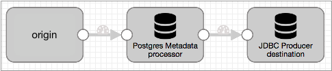
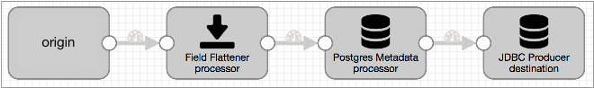
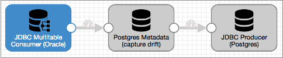
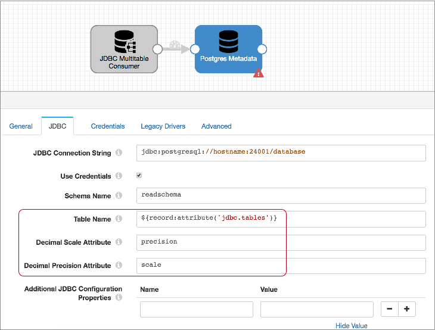
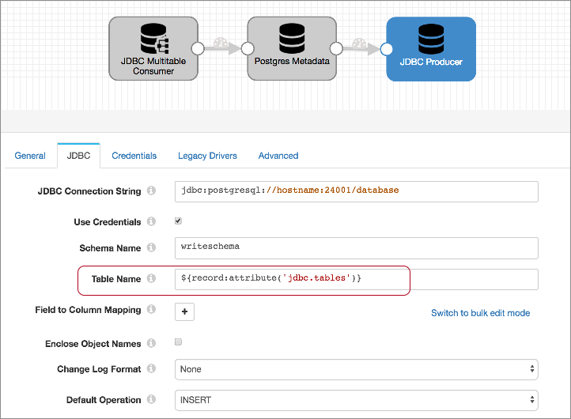

Drift Synchronization Solution for PostgreSQL
The Drift Synchronization Solution for PostgreSQL detects drift in incoming data and automatically creates or alters corresponding PostgreSQL tables as needed before the data is written.
For example, say you want to write nationwide inventory data to PostgreSQL tables. As you acquire new stores or as individual stores upgrade their systems, the structure of the data changes. To mandate that every store uses the same data structure is possible, but not practical. You prefer a solution that adapts to this changing environment.
With the Drift Synchronization Solution for PostgreSQL, the PostgreSQL Metadata processor determines when new tables or fields are required and submits create and alter table commands to the database to make those changes.
The JDBC Producer destination performs the writes. By the time the data reaches the JDBC Producer, the newly created or altered database tables are ready to be used.
All columns in the tables created or altered by the PostgreSQL Metadata processor allow nulls. When writing records with missing fields, the database inserts null values in the corresponding columns.
By creating and altering tables based on record requirements, the Drift Synchronization Solution for PostgreSQL enables writing data with changing data structures to PostgreSQL with no additional intervention.
Before deploying the Drift Synchronization Solution for PostgreSQL, consider the create and alter table speed of your database, and the create and alter table requirements of the incoming data. If the required changes cannot be performed quickly by the database, the Drift Synchronization Solution for PostgreSQL might not be an appropriate solution.
Support for additional databases is planned for future releases. To state a preference, leave a comment on this issue.
Basic Implementation and Processing
A basic implementation of the Drift Synchronization Solution for PostgreSQL includes the origin of your choice, the PostgreSQL Metadata processor, and the JDBC Producer destination:

The Drift Synchronization Solution for PostgreSQL uses the PostgreSQL Metadata processor and JDBC Producer destination as follows:
- PostgreSQL Metadata processor for drift detection and table changes
- When processing records, the PostgreSQL Metadata processor detects the need for new tables and columns. Upon detecting the need for changes, it executes data definition language (DDL) to create new database tables or alter existing tables, as needed. This allows the database to create or alter tables before records reach the JDBC Producer destination.
- JDBC Producer destination for writes to new and altered tables
- The JDBC Producer destination writes data to the database based on the configuration properties in the stage.
Flattening Records
At this time, the Drift Synchronization Solution for PostgreSQL does not process records with nested fields. If necessary, you can use the Field Flattener processor to flatten records with nested fields before passing them to the PostgreSQL Metadata processor.
A basic implementation of the Drift Synchronization Solution for PostgreSQL with a Field Flattener looks like this:

Requirements
- Target table information
- To write a record to the appropriate table in the database, the PostgreSQL Metadata processor and JDBC Producer destination must be able to determine the table to use for each record.
- Decimal precision and scale information
- To enable the PostgreSQL Metadata processor to create Decimal fields with the correct precision and scale, the processor must be able to determine the precision and scale to use. By default, the processor looks for the information in "precision" and "scale" field attributes for every Decimal field.
- Database permissions
- The user account used for connection credentials in the PostgreSQL Metadata processor must have both the Create Table and Alter Table permissions on the database.
- Primary use of the target tables
- Do not alter any table that might be used by the pipeline while the pipeline runs. Since the PostgreSQL Metadata processor caches information about table structures and creates and alters tables, the processor must have accurate information about the tables.
Implementation Steps
- Configure the origin and any additional processors that you want to use.
If data includes records with nested fields, add a Field Flattener to flatten records before passing them to the PostgreSQL Metadata processor.
If each record does not include the table where the record should be written or the precision and scale information required for Decimal fields, use an Expression Evaluator to generate that information. You can write the information to a field, record header attribute, or field attributes, as best suits your needs. For more information, see Requirements.
- To capture drift and alter database tables, configure the PostgreSQL Metadata processor:
- If you haven't yet, install the JDBC driver for the database. You cannot access the database until you install the required driver. For information about installing additional drivers, see Install External Libraries.
- Configure the connection information.
The user account used for the connection credentials must have both the Create Table and Alter Table permissions on the database.
Tip: You might set up runtime parameters for the JDBC URL to make configuring the PostgreSQL Metadata processor and the JDBC Producer easier. To secure sensitive information such as user names and passwords, you can use runtime resources or credential stores. - Configure the schema name and table name.
You can enter schema and table names or use an expression that evaluates to the schemas and table names to use.
When processing data from either of the JDBC origins, you can use a record header attribute for the table name. The JDBC Multitable Consumer origin writes the originating table name in the
jdbc.tablesrecord header attribute. If you want to write records to tables of the same name, you can use${record:attribute('jdbc.tables')}for the table name property.Similarly, the JDBC Query Consumer writes the originating table name in a
<user-defined prefix>.tablesrecord header attribute when the origin is configured to create record header attributes. So if you want to write records to tables of the same name, you can use${record:attribute('<user defined prefix>.tables')}for the table name property.For data from other origins, when necessary, you can use an Expression Evaluator earlier in the pipeline to write the information to a record field or record header attribute.
- Configure the decimal field precision
and scale attribute names.
When processing data from the JDBC Query Consumer or JDBC Multitable Consumer origins, use the default attribute names, "precision" and "scale". Both origins store the precision and scale of Decimal columns in "precision" and "scale" field attributes for each Decimal field.
When processing data from other origins, you can use the Expression Evaluator processor earlier in the pipeline to create precision and scale field attributes for Decimal fields.
- Configure the rest of the processor properties as needed.
For more information about the PostgreSQL Metadata processor, see PostgreSQL Metadata.
- Configure the JDBC Producer destination to write to PostgreSQL tables:
- Configure the connection information. The user account used for the
connection credentials must have Write permission on the database.Tip: You might set up runtime parameters for the JDBC URL to make configuring the PostgreSQL Metadata processor and the JDBC Producer easier. To secure sensitive information such as user names and passwords, you can use runtime resources or credential stores.
- Configure the Table Name property. Use the same expression used for the table name in the PostgreSQL Metadata processor.
- Use the default INSERT operation.
- Configure the rest of the destination as needed.
For more information about the JDBC Producer destination, see JDBC Producer.
- Configure the connection information. The user account used for the
connection credentials must have Write permission on the database.
Case Study
Let's say you want to replicate a set of Oracle tables to PostgreSQL, and you need any changes to the Oracle tables to be mirrored in the PostgreSQL tables.
To do this, you start with the JDBC Multitable Consumer origin and connect it to the PostgreSQL Metadata processor. Then, use a JDBC Producer destination to write to PostgreSQL. The resulting pipeline looks like this:

Let's take a closer look...
The JDBC Multitable Consumer Origin
The JDBC Multitable Consumer origin can use multiple threads to process data from database tables, up to one thread per table, so it is an ideal origin to process data from a large set of database tables.
The JDBC Multitable Consumer origin writes the
originating table name in the jdbc.tables record header
attribute. The origin also stores the original precision and scale for Decimal columns in field
attributes for each Decimal field in the record.
The PostgreSQL Metadata processor uses this information to write records to database tables and to create Decimal fields with the correct precision and scale.
To use the Drift Synchronization Solution for PostgreSQL with the JDBC Multitable Consumer origin, you don't need to configure anything special in the origin, simply configure the origin to read from the Oracle tables that you want to process and connect it to the PostgreSQL Metadata processor.
The PostgreSQL Metadata Processor
The PostgreSQL Metadata processor performs the heavy lifting for the Drift Synchronization Solution for PostgreSQL.
When processing data, the PostgreSQL Metadata processor uses a table name expression to determine the name of the target table to use for each record. If the target table is not in the processor's cache, the processor queries the database for table information and caches the results. When the target table is in the cache, the processor compares the record structure against cached table structure.
When a record includes fields that do not exist in the table, the PostgreSQL Metadata processor alters the table as needed, then updates the table information in the cache. When a record should be written to a table that does not exist, the processor creates the table based on the fields in the record.
When you configure the PostgreSQL Metadata processor, you configure the connection information for the PostgreSQL database and other standard properties. The user account used for the connection credentials must have both the Create Table and Alter Table permissions on the database.
Then, since the JDBC Multitable Consumer writes the table name to the jdbc.tables record
header attribute, you use the following expression for the Table Name property to call
that information: ${record:attribute('jdbc.tables')}.
The JDBC Multitable Consumer also writes the precision and scale for each Decimal field to "precision" and "scale" attributes for each Decimal field. So you can use the defaults for the Decimal Scale Attribute and Decimal Precision attribute properties.
The resulting PostgreSQL Metadata processor looks like this:

The JDBC Producer Destination
To write the data to PostgreSQL, you use the JDBC Producer destination.
When you configure the destination, you configure the connection information, the tables to write to, and the default operation. Because you are replicating tables, all of the field names will match the column names, so you don't need to specify any field to column mappings. Configure other properties as needed.
For the connection properties, use the same connection string and schema name that you used for the PostgreSQL Metadata processor. The user account associated with the credentials must have Write permission on the database.
For the Table Name property, use the same expression that you used in the PostgreSQL Metadata processor: ${record:attribute('jdbc.tables')}. This enables the destination to write each record to the table defined in the
jdbc.tables record header attribute. When needed, the PostgreSQL Metadata processor creates or alters the table to allow the record to be written without errors.
Then, set the default operation to INSERT.
The configured destination should look something like this:

Running the Pipeline
- The PostgreSQL Metadata processor assesses each record, checking the jdbc.tables header attribute for the table each record requires, and comparing the record structure against the cached table structure. If the table is not cached, the PostgreSQL Metadata processor pings the database for table information, then performs the comparison.
- When a record includes a new or changed field, the PostgreSQL Metadata processor sends an alter table command to the database, then updates the table information in its cache. When a record requires a table that does not exist, the PostgreSQL Metadata processor creates the table based on the record structure.
- When creating Decimal columns, the PostgreSQL Metadata processor uses information in the precision and scale field attributes for the corresponding Decimal field.
- The JDBC Producer writes the records to tables based on the table name in the
jdbc.tables header attribute.
All columns in the tables created or altered by the PostgreSQL Metadata processor allow nulls. When writing records with missing fields, the database inserts null values in the corresponding columns.
Since the PostgreSQL Metadata processor created and altered tables as needed, no write errors should occur from structural changes in the data.
- When the pipeline stops, the PostgreSQL Metadata processor cache is cleared.
PostgreSQL Data Types
| Data Collector Data Type | PostgreSQL Data Type |
|---|---|
| Boolean | Boolean |
| Byte Array | Bytea |
| Char | Character |
| Date | Date |
| Datetime | Timestamp without time zone |
| Decimal | Numeric |
| Double | Double precision |
| Float | Real |
| Integer | Integer |
| Long | Bigint |
| List | Not supported |
| List-Map | Not supported |
| Map | Not supported |
| Short | Smallint |
| String | Character varying |
| Time | Time without time zone |
| Zoned Datetime | Timestamp with time zone |